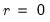

wavedecomp Series Views Compute the wavelet transform of the series. Syntax Series View: series_name.wavelet(options) Options transform=arg (default=“dwt”) Wavelet transform type: “dwt” (discrete wavelet transform – DWT), “modwt” (maximum overlap DWT – MODWT), “mra” (DWT multiresolution analysis – DWT MRA), or “momra” (MODWT MRA). Note that when performing DWT or MRA, if the series length is not dyadic, a dyadic fix may be set with the “fixlen=” option fixlen=arg (default=“mean”) Fix dyadic lengths in DWT and MRA transforms: “zeros” (pad remainder with zeros), “mean” (pad remainder with mean of series), “median” (pad remainder with median of series), “shorten” (cut series length to dyadic length preceding series length). maxscale=integer (default = max possible) Maximum scale for wavelet transform. The max possible is obtained as follows. Let denote the series length and decompose into its dyadic component and a remainder: , . The default maxscale is then set with the following rules: DWT: (1) if  then , otherwise (2) if expanding the series, and (3) if contracting the series . MODWT: . filter=arg (default=“h”) Wavelet filter class: “h” (Haar), “d” (Daubechies), “la” (least asymmetric). If “filter=h” or “filter=la”, the filter length may be specified using “flen=”. Wavelet filter boundary conditions are specified using the “bound=” option flen=integer Wavelet filter excess length as an even number between 2 and 20. For use when “filter=d” (default= 4) or “filter=la” (default=8). bound=arg (default = “p”) Filter boundary handling: “p” (periodic), “r” (reflective). hidebound Wavelet filter coefficients affected by the boundary will not be highlighted in the output graphs. prompt Force the dialog to appear from within a program. p Print results. Examples dgp.wavelet(maxscale=7) The line above will perform the discrete wavelet transform of the series DGP using a Haar wavelet filter and up to the seventh wavelet scale. dgp.wavelet(transform=modwt, maxscale=3, lter=D) The line above will perform the maximum overlap discrete wavelet transform using a Daubechies wavelet filter of length 4 and up to the third wavelet scale. dgp.wavelet(transform=mra, maxscale=4, lter=la, en=10, xlen=zeros) The line above will perform a DWT multi-resolution analysis of the series DGP using a least asymmetric wavelet filter of length 10 and up to the fourth wavelet scale. It will also fix the non-dyadic length of the series by padding with zeros. dgp.wavelet(transform=momra, maxscale=4, filter=d, flen=12, hidebound) The line above will perform a MODWT multi-resolution analysis using a Daubechies wavelet filter of length 12 and up to the fourth wavelet scale. It will also turn off highlighting of wavelet coefficients on the boundary. Cross-references See “Wavelet Analysis” and “Wavelet Transforms” for discussion. See also “Wavelet Objects”. See also Series::waveanova, Series::waveoutlier, Series::wavethresh, and Series::makewavelets.


denote the series length and decompose
into its dyadic component and a remainder:
,
. The default maxscale
is then set with the following rules:
 , otherwise (2) if expanding the series,
, otherwise (2) if expanding the series,  and (3) if contracting the series
and (3) if contracting the series  .
. .
.